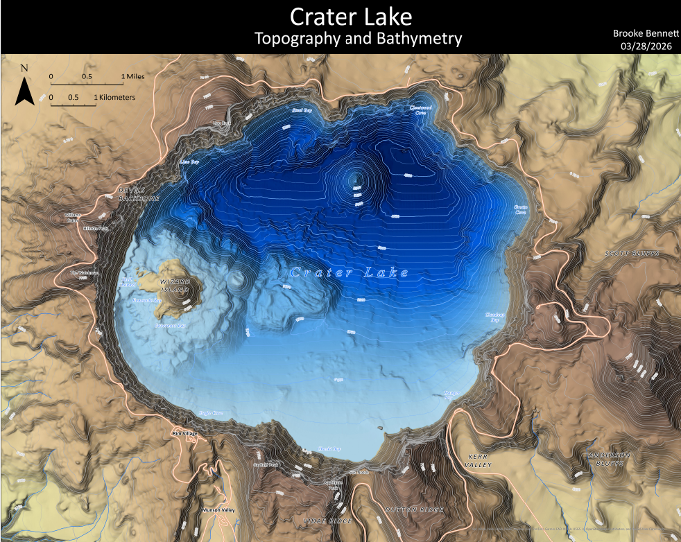

Problem
Design a poster-quality topographic map of Crater Lake intended to be printed and used by park enthusiasts who are familiar with the area and need precise information retrieval, balancing terrain detail and readability at a scale of 1:24,000.
My role
Sole author; made all cartographic design decisions and produced the map.
Data & method
Method & design decisions:
- Chose a multidirectional hillshade over a traditional single-direction hillshade because it draws illumination from six directions, providing higher detail and handling shadows and oversaturated areas better.
- Selected a z-value of 2 after testing values of 1, 1.25, 1.5, 1.75, and 2, as it provided the best vertical contrast for the area.
- Applied a percent clip stretch to the DEM for the hypsometric tint, which excludes extreme values/outliers so only the most important values are included, allowing more detail and higher contrast.
- Used a 50-foot contour interval to provide precise elevation breaks without overcrowding areas of rapid elevation change at the 1:24,000 scale.
- Used a 250-foot index contour interval (every 5th contour), with a line width of 0.5 for intermediate contours and 1.25 for index contours, so index contours pop while keeping every line visible — especially around Crater Lake where elevation changes quickly.
Figures
Final poster and an animated flyover of the Crater Lake area.
